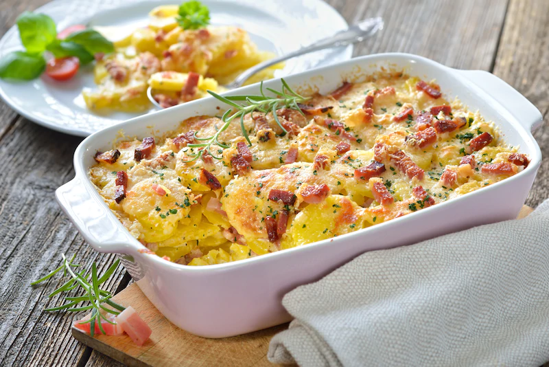

Zapiekanka

Zapiekanka ziemniaczana to jeden z ciekawszych pomysłów na pyszny i szybki obiad.
Przepis jest super prosty a zapiekanka smaczna, piękna i łatwa w przygotowaniu.
Skadniki
- obrane surowe ziemniaki - 500 gramów
- boczek wędzony - 120 gramów
- Rosół z kury Knorr - 1 sztuka
- średniej wielkości cebula - 1 sztuka
- śmietana 30% - 200 mililitrów
- ząbek czosnku - 1 sztuka
- starty żółty ser - 50 gramów
- oliwa z oliwek - 20 gramów
Przygotowanie
- Pokrój ziemniaki w plastry, cebulę i boczek pokrój w drobną kostkę, czosnek posiekaj.
- W garnku na oleju podsmaż cebulę, boczek oraz czosnek, po czym dodaj pokrojone ziemniaki. Smaż je chwilę, ciągle mieszając, po dwóch minutach dodaj śmietanę.
- Całość gotuj trzy minuty, redukując śmietanę o połowę. Następnie dodaj kostkę rosołową Knorr.
- Całość umieść w żaroodpornym naczyniu, posyp startym serem i przykryj folią aluminiową.
- Piecz w temperaturze 190°C przez około 50 minut. Przed końcem pieczenia usuń folię, aby ser się lekko zarumienił.
Homepage